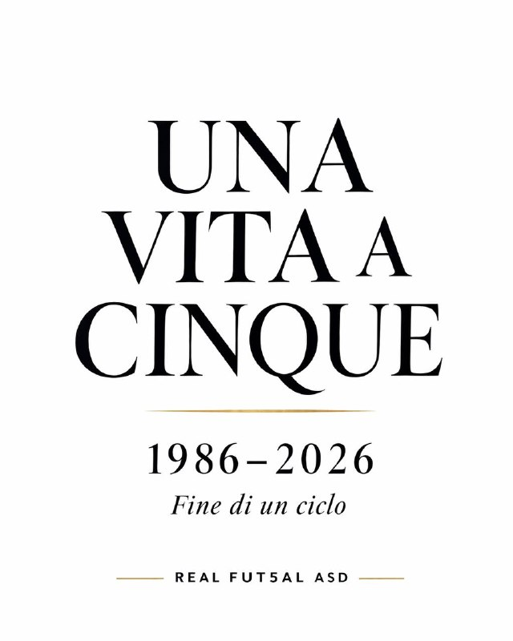

12 maggio 2026
Il futsal, come la vita, è un’avventura che inizia e finisce. Ho sempre saputo che questo giorno sarebbe arrivato. Non si può correre per sempre. Non si può lottare per sempre. Ma si può amare per sempre ciò che si è vissuto.
Dopo 15 anni di attività tra FSSI, DCL e LND, è arrivato per me il momento di chiudere questo capitolo.
In questi anni ho vissuto emozioni che porterò dentro per sempre. Vittorie. Sconfitte. Sacrifici. Viaggi. Spogliatoi. Silenzi prima delle partite. Urla di gioia dopo un gol.
Ho conquistato 60 medaglie: 36 ori, 20 argenti, 4 bronzi.
Ma i numeri non raccontano tutto. Ogni medaglia ha un volto, una squadra, una fatica, una storia.
Non stiamo parlando solo di 15 anni da giocatore. Stiamo parlando di una vita intera nel futsal, dal 1986 ad oggi. Atleta. Dirigente. Manager. Consigliere. Vicepresidente. Presidente. Patron. Fondatore.
Questo non è “fine carriera”. È la fine di un’epoca personale.
Ho dato tutto quello che avevo. E oggi sento che quella motivazione feroce che mi ha accompagnato per anni si è trasformata in consapevolezza. Non è stanchezza. È maturità. È il momento giusto.
Scelgo di iniziare una nuova fase della mia vita. Non è un addio allo sport. È un saluto al futsal giocato. Perché disciplina, rispetto, sacrificio e integrazione sociale resteranno parte di me per sempre.
Le mie cinque eredità
Ho lasciato le mie cinque eredità, in luoghi e tempi diversi, ma con lo stesso spirito:
Cuore – PS Scledum Schio (anni ’80)
Passione – PS Palladio Vicenza (anni ’90)
Visione – PS Patavium Padova (anni ’90)
Anima – ASDC Real E Non Solo (anni 2010)
Sfida – ASD Real Fut5al (anni 2020)
Ringrazio ogni compagno di squadra. Ogni allenatore. Ogni dirigente. Ogni avversario. Ogni persona che ha condiviso anche solo un tratto di questo cammino.
Chiudo con orgoglio. Senza rimpianti. Con gratitudine.
Il futsal mi ha dato molto. Io ho restituito tutto ciò che potevo. Il resto della mia storia sarà raccontato altrove.
1986–2026. Fine di un ciclo.
Grazie.
Luca Toniolo
Fondatore – Real Fut5al ASD